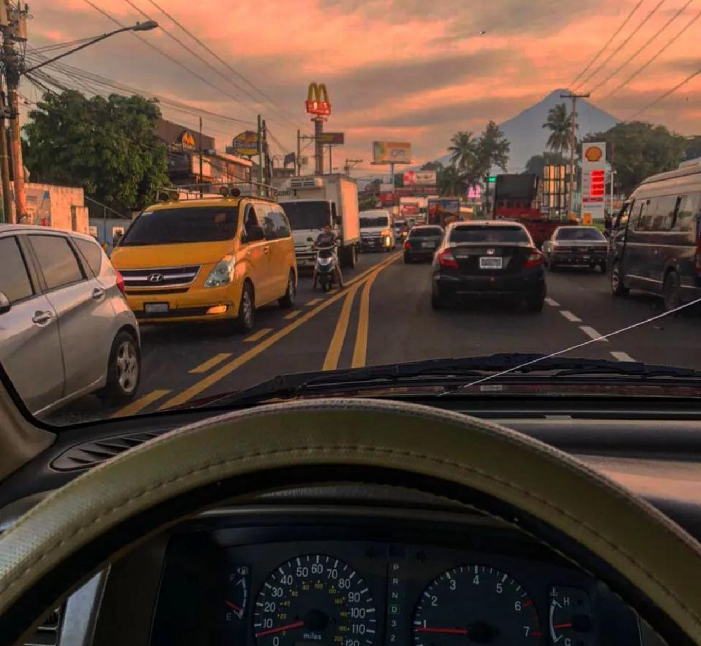
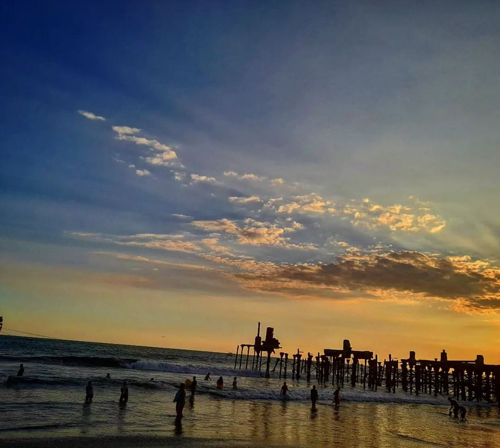
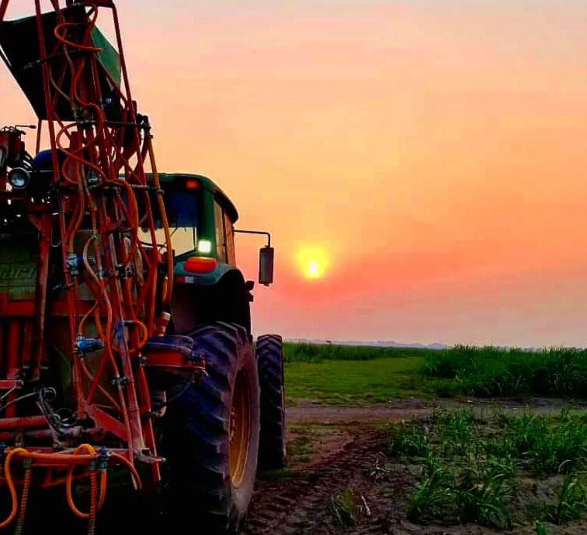
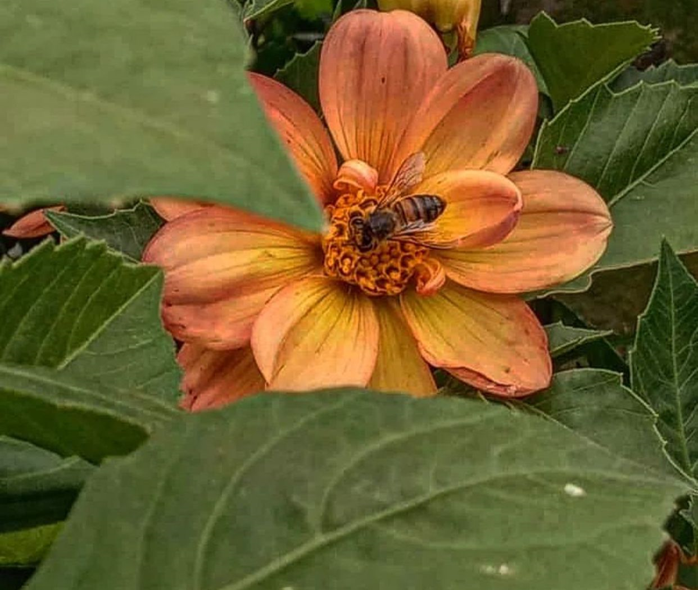
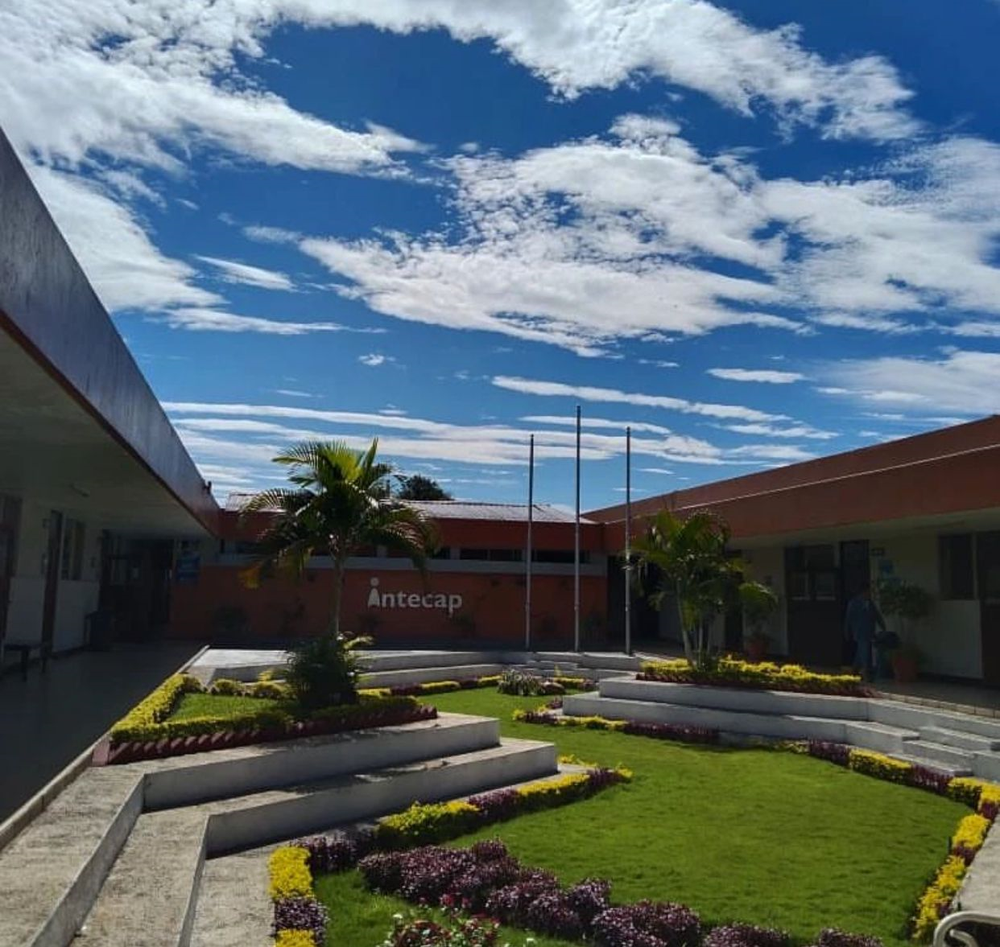
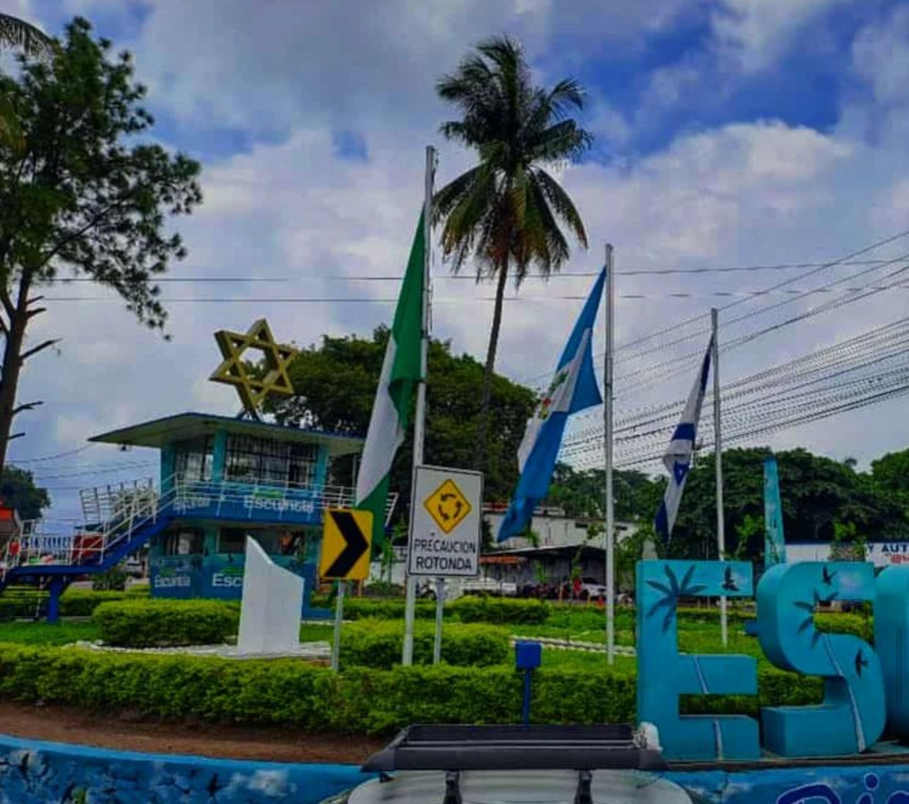
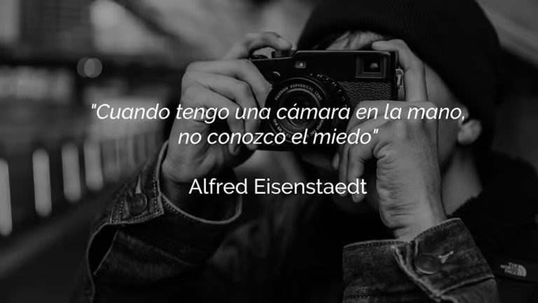

Al pasar del tiempo me ha gustado la naturaleza siempre trato la manera ver ir a lugares para tomar fotografias les mostrare algunos lugares en donde he realizo fotografias en verdad amo tomar fotos es una de mis pasiones....
he creado una pequeña galeria de todas mis fotos quiero enseñartelas a continuacion..... :)
     para que observes algunos videos de las mejores fotografias espero algun dia poder tener un canal y colocar mis fotografias :)
enlace 1 enlace 2 PEQUEÑAS FRASES :)
Fotografiar es colocar la cabeza, el ojo y el corazón en un mismo eje. Henri Cartier-Bresson
"Cuando fotografías a una persona en color, fotografías su ropa, cuando lo haces en blanco y negro, fotografías su alma." Ted Grant
" La fotografía es una lucha. El enemigo es el tiempo y vences cuando consigues congelarlo en el momento adecuado, evitando que algo que habla de ti y de lo que está pasando muera y desaparezca para siempre. Cristina García Rodero"
"Una fotografía es un secreto sobre un secreto, cuanto más te cuenta menos sabes. Diane Arbus